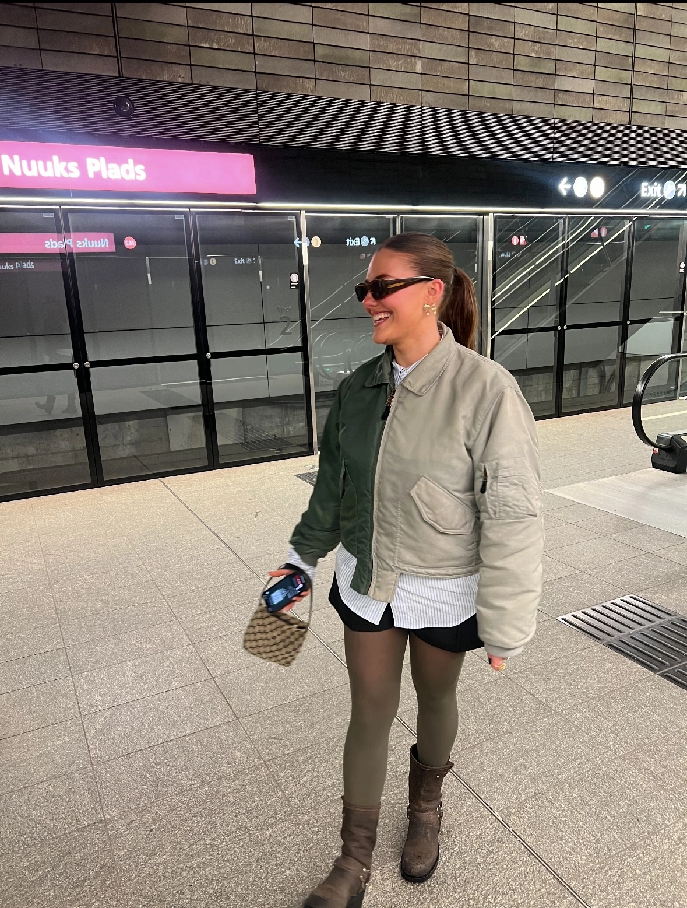

Om mig
Erfaring
Jeg har haft tidligere erfaringer med kreative projekter, og altid ønsket at gå i dybden med den digitale kreative del, og udvikling af UX/UI.
Hvorfor MMD?
Jeg valgte multimediedesign, fordi jeg elsker at kombinere kreativitet med struktur og digitale løsninger.
Fremtiden?
I fremtiden ønsker jeg at arbejde kreativt med digitale løsninger og fortsætte med at udvikle mine kompetencer.